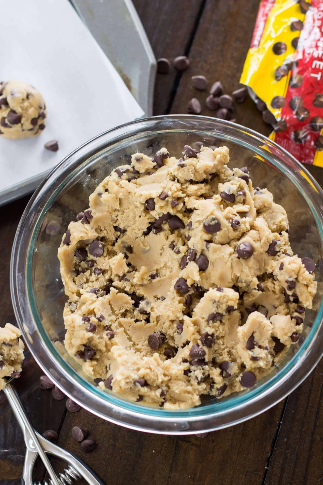
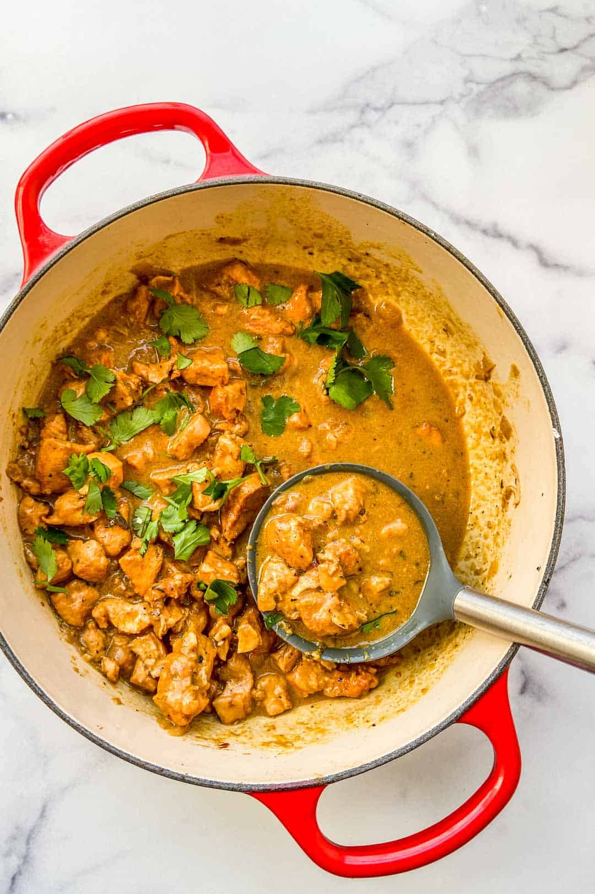
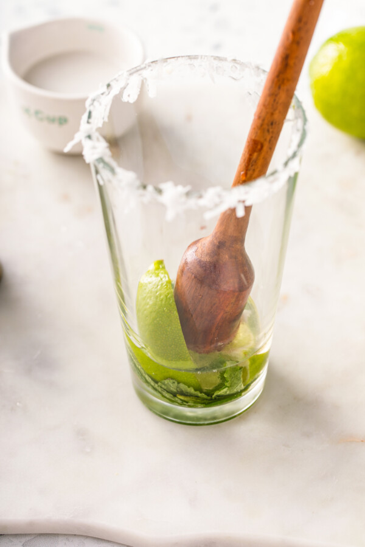
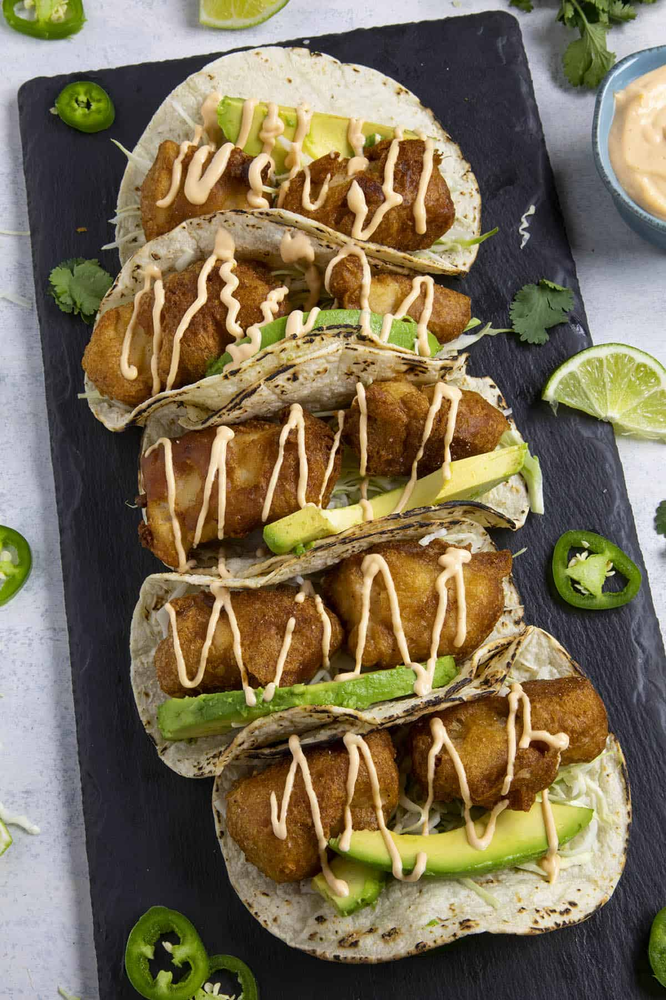

Double Chocolate Cookies Recipe
Author: Sarah Yiler
Prep Time: 10 minutes
Cook Time: 12 minutes
Calories: 300 per serving
Background Story
My daughter learned to make these cookies at a baking camp at Zingermanns and has tweaked the recipe to fit the taste buds of her siblings. They are extremely sugary so the salt helps to balance it. Note, these cookies are best eaten very quickly.
Recipe Ingredients:
- Unsalted butter
- Granulated Sugar
- Packed light or dark brown sugar
- Large egg
- Pure vanilla extract
- Semi-sweet chocolate chunks (melted)
- All-purpose flour
- Natural unsweetened cocoa powder
- Baking soda
- Salt
- Semi-sweet chocolate chunks
Recipe Steps:
- In a mixing bowl cream together the butter, granulated sugar, and brown sugar
- Add the egg and vanilla extract and beat well
- Add the melted chocolate
- In a separate bowl combine the flour, baking soda, cocoa powder and salt
- Combine the wet and dry ingredients
- Add the unmelted chocolate chunks
- Form 15 cookies and place on a baking sheet
- Cookie for 12 to 13 minutes at 350 degrees
- Let it cool before enjoying your cookies!

Swedish Pancake Recipe
Author: June Brightman
Prep Time: 15 minutes
Cook Time: 20 minutes
Calories: 500 per serving

Background Story
On a study abroad trip to Sweden, I stopped in this small cafe to wait out the rain. I was more than prepared to order a croissant and expresso when I saw this older lady eating a delightful breakfast with fruits. I asked the waiter "what is that dish?" He responded "Plättar". After one bite, I vowed that if I never learned how to make anything else in this world, I would learn how to make Plättar.
Recipe Ingredients:
- 3 eggs
- 1 1/4 cups of milk
- 3/4 cup of all-purpose flour
- 1 tablespoon of white sugar
- 1/2 teaspoon of salt
- 1 tablespoon of butter
Recipe Steps:
- Beat eggs in a bowl with an electric mixer until thick and lemon-colored, 3 to 5 minutes. Stir in milk.
- Sift together flour, sugar, and salt in a separate bowl. Add to egg mixture; mix until batter is smooth.
- Grease a griddle with butter; heat over medium heat.
- Drop tablespoonfuls of batter on the griddle.
- Spread to make thin pancakes.
- Cook until light brown on bottom, 1 to 2 minutes.
- Flip and continue cooking until second side is light brown, 1 to 2 minutes more.
- Let it cool of before folding it in fours.
- Garnish with desired fruits and serve.
Chicken Curry Recipe
Author: Lena Stan
Prep Time: 15 minutes
Cook Time: 30 minutes
Calories: 400 per serving
Background Story
After watching Eat, Pray, Love I decided it was time for me to also travel across the world in search of more. While i couldn't afford to travel to three countries, I settled on just going to one, India. While the culture and traditions are undoubtbly astonishing, it was the curry chicken that my host family made that will remain a vivid image in my mind.
Recipe Ingredients
- 1/4 cup of vegetable oil
- 1 onion, chopped
- 2 cloves of garlic, minced
- 1 tablespoon of curry powder
- 1 teaspoon of ground cinnamon
- 1 teaspoon of paprika
- 1 bay leaf
- 1/2 teaspoon of grated fresh ginger root
- 1/2 teaspoon of white sugar
- salt to taste
- 2 skinless, boneless chicken breast halves - cut into bite-size pieces
- 1 tablespoon of tomato paste
- 1 cup of plain yogurt
- 3/4 cup of coconut milk
- 1/2 lemon, juiced
- 1/2 teaspoon of cayenne pepper
Recipe Steps
- Heat oil in a skillet over medium heat. Saute onion until lightly browned. Stir in garlic, curry powder, cinnamon, paprika, bay leaf, ginger, sugar and salt. Continue stirring for 2 minutes. Add chicken pieces, tomato paste, yogurt, and coconut milk. Bring to a boil, reduce heat, and simmer for 20 to 25 minutes.
- Remove bay leaf, and stir in lemon juice and cayenne pepper. Simmer 5 more minutes.
- Let it cool off before serving.

Coconut Mojito Mocktail
Author: Susie Castillo
Prep Time: 10 minutes
Background Story
After a long day of work, I decided to go to a local restaurant to unwind. I loked at the menu and wanted to order something that made me feel like I was in another island on the beach. The bartender asked me if I wanted to try a coconut mojito mocktail. I was hesitant at first but, after one sip I was hooked. I asked the bartender for the recipe and he gladly gave it to me. He said he had a rough day at work not too long ago and his girlfriend decided to make something to make him feel like he was on vacation. I have been making it ever since. He passed the recipe down to me and I am going to pass it down to anyone who needs to relax after a long day at work.
Recipe Ingredients
- 1/2 cup of coconut water
- 1/2 cup of coconut milk
- 1/2 cup of sparling water or club soda
- 1/4 cup of lime juice
- 1/4 cup of mint leaves
- 1/4 cup of simple syrup
- 1/4 cup of ice
Recipe Steps
- Sprinkle coconut flakes on plate
- Cut mint wheel - we will use this later
- Run a lime wedge around the rim of cup
- Garnish rim with coconut flakes and add ice
- Add coconut water, coconut milk, sparkling water, lime juice, mint leaves, and simple syrup to a shaker
- Shake well
- Pour into cup
- Garnish with mint wheel
- Enjoy!
Baja Fish Tacos
Author: Susie Castillo
Prep Time: 10 minutes
Cook Time: 10 minutes
Calories: 300 per serving
Background Story
At eveyr family gathering there were a few dishes I knew would also be on the table. Arroz con pollo, paella, jamon, and more. While every dish was my favorite, baja tacos have an important place in my heart. It was the first dish I ever helped make with my family. This recipe is dedicated to my tía Jenn, mi abuela Marie, and mi madre who taught me how to make baja tacos all those years ago.
Recipe Ingredients
- 1/2 cup of all-purpose flour
- 1/2 teaspoon of salt
- 1/2 teaspoon of ground black pepper
- 1/2 teaspoon of garlic powder
- 1/2 teaspoon of ground cumin
- 1/4 teaspoon of cayenne pepper
- 1/2 cup of beer
- 1/4 cup of plain yogurt
- 1/4 cup of mayonnaise
- 1 lime, juiced
- 1 jalapeno pepper, minced
- 1/4 cup of chopped fresh cilantro
- 1/2 cup of all-purpose flour
- 1/2 teaspoon of salt
- 1/2 teaspoon of ground black pepper
- 1/2 teaspoon of garlic powder
- 1/2 teaspoon of ground cumin
- 1/4 teaspoon of cayenne pepper
- 1 pound of cod fillets, cut into 2 to 3 ounce portions
- 1 quart of oil for frying
- 1 (12 ounce) package of corn tortillas
- 1/2 medium head of cabbage, finely shredded
Recipe Steps
- To make beer batter: In a large bowl, combine flour, salt, black pepper, garlic powder, cumin, and cayenne pepper. Blend egg and beer, then quickly stir into the flour mixture (don't worry about a few lumps).
- To make white sauce: In a medium bowl, mix together yogurt and mayonnaise. Gradually stir in fresh lime juice until consistency is slightly runny. Season with jalapeno, capers, oregano, cumin, dill, and cayenne.
- Heat oil in deep-fryer to 375 degrees F (190 degrees C).
- Dust fish pieces lightly with flour. Dip into beer batter, and fry until crisp and golden brown. Drain on paper towels. Lightly fry tortillas; not too crisp. To serve, place fried fish in a tortilla, and top with shredded cabbage, and white sauce.